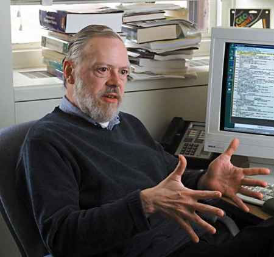

By Cheng Herui / @木登WiN
C, hacker, geek, TCP/IP, GNU, Emacs, gcc, BSD, MS, Linux, 开源 ...
CTSS -> Multics -> Unix
1969, Ken Thompson, PDP-7, Unics(uniplexed info and computing serviece), 星际旅行
What we wanted to preserve was not just a good environment in which to do programming, but a system around which a fellowship could form. We knew from experience that the essence of communal computing, as supplied by remote-access, time-shared machines, is not just to type programs into a terminal instead of a keypunch, but to encourage close communication.
Thompson和Ritchie为支持游戏开发而在PDP-7上编制的实用程序成了Unix的核心。
为贝尔实验室的专利部门进行“文字处理”, 开创unix主旋律-与文档格式化、排版和通讯工具的紧密结合。
可移植操作系统
性能的局限不仅成就了经济性，而且鼓励了设计的简约。
全球实验室和大学开始体验unix, 伯克利分校
伯克利毕业生Bill Joy管理的实验室发布第一版的BSD。
到1980年，伯克利一直是为这个unix变成积极做贡献的高校子网的核心。包括vi编辑器等的创意和代码不断反馈到贝尔实验室。
同年售出第一个商用C编译器
现在unix程序员公认的第一个完全意义上的unix。
AT&T版本移植到微机，XENIX
DRAPA选择伯克利unix作为平台（毫无阻碍拿到源码）在VAX机上实现全新TCP/IP协议栈。